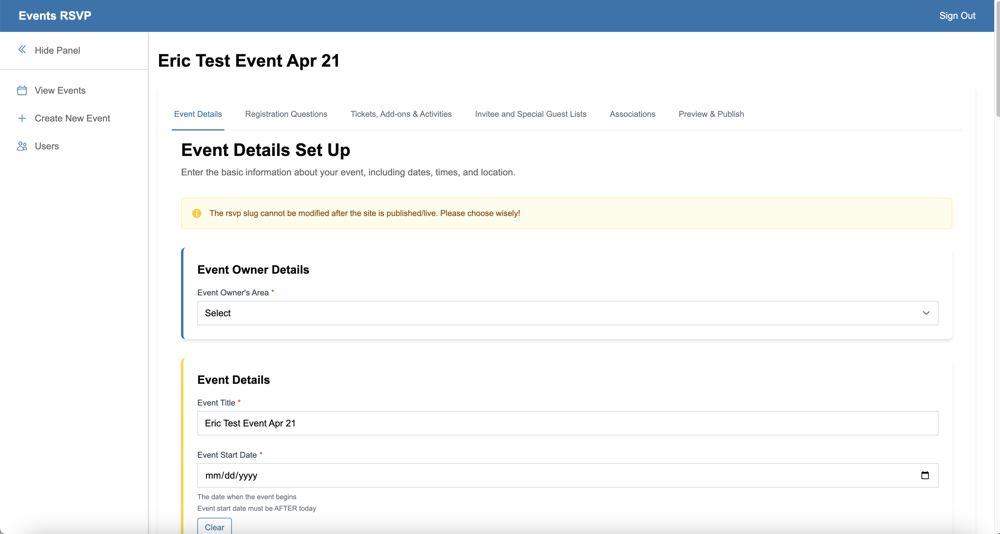
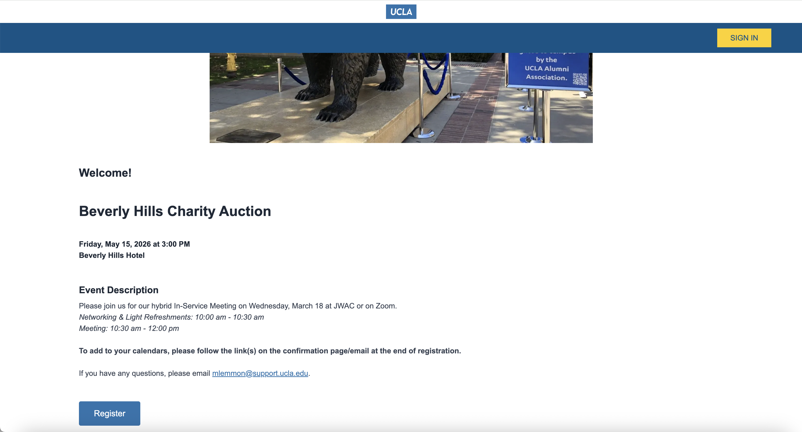
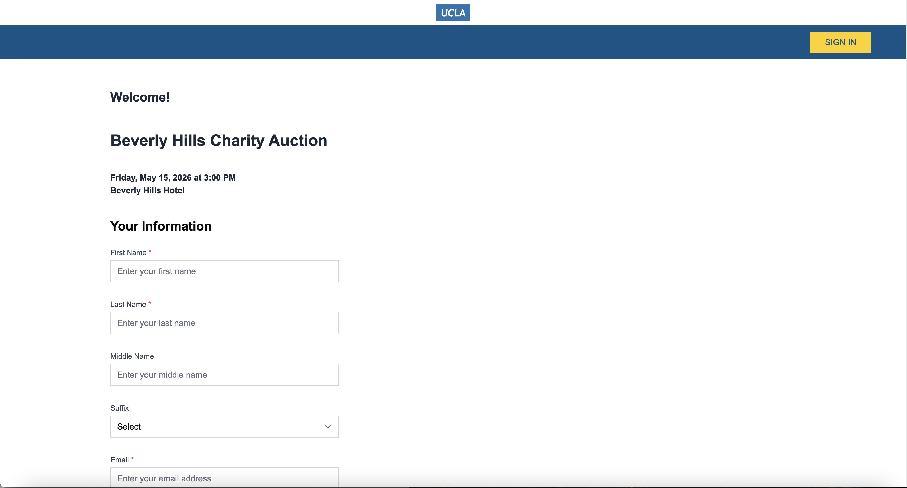

UCLA RSVP Platform Redesign
Project Overview
UCLA's External Affairs team manages hundreds of events each year — from intimate alumni receptions to large-scale fundraising galas. The legacy RSVP system they relied on was slow, inaccessible on mobile, and required IT involvement every time event details changed. The result was a painful experience for both constituents trying to register and staff trying to manage events.
I was the sole Product Designer responsible for researching, designing, and delivering a modern, mobile-first RSVP platform from discovery through handoff — all while the events calendar kept running.
Design Process
1. Discovery & User Research
Conducted stakeholder interviews with event coordinators and surveyed a sample of constituents who had recently registered for UCLA events. Created personas and journey maps to model the two primary user types: the event registrant and the event coordinator managing RSVPs on the back end.
2. Problem Framing
The most critical finding from research was that mobile abandonment wasn't primarily caused by poor design — it was caused by a registration flow that timed out after 10 minutes on mobile due to a legacy session management issue. Scoping the fix to also improve the visual design gave us the opportunity to address both technical debt and UX debt simultaneously.
3. Wireframes & Prototyping
Designed wireframes for the full registration flow — event landing page, ticket selection, attendee details, and confirmation — with a mobile-first approach. Scope creep mid-project required reprioritizing features; I worked closely with developers to phase deliverables and keep the MVP on track without compromising the core user experience.
4. Accessibility & Testing
Built high-fidelity prototypes in Figma and conducted moderated usability tests. Applied WCAG 2.1 AA standards to all interactive components — including focus states, color contrast ratios, and screen reader-friendly form labels. Iterated on the ticket selection and attendee detail screens based on test feedback.
Research Findings
- 63% of respondents had attempted to register for a UCLA event on a mobile device; of those, 44% reported abandoning the process before completing registration
- Event coordinators spent an average of 3+ hours per event coordinating manual updates when the legacy system couldn't accommodate last-minute changes — time that could be eliminated with a self-service admin tool
- Constituents with disabilities reported the existing system as one of the most inaccessible digital touchpoints in the UCLA ecosystem — keyboard navigation was broken throughout the registration flow
Key Screens


Platform Screenshots



Before & After
- Session timeouts caused mobile abandonment
- IT required for every event update
- Broken keyboard navigation — not WCAG compliant
- No personalized registration links
- Generic confirmation with no event branding
- Mobile-first flow with persistent session handling
- Self-service event management for coordinators
- WCAG 2.1 AA compliant throughout
- Personalized registration links per attendee
- Branded confirmation screens with add-to-calendar
Outcome
The redesigned platform reduced registration abandonment by 47% and increased mobile usage by 60%. Stakeholders reported measurably improved usability and event coordination efficiency. The self-service coordinator tools eliminated the IT bottleneck for routine event updates, freeing the technology team to focus on higher-value work.